Nuestro equipo de expertos dispone de la formación primordial para cubrir cualquier necesidad de mantenimiento, compostura o diagnosis. Lo cual busca en mecánica para su carro con la garantía, calidad y servicio más exigentes.
La sobrecarga eléctrica se puede prevenir instalando una defensa positiva contra sobrecorriente que detecte sobrecorriente e interrumpa el abasto. Para evadir esta clase de fallos en motores eléctricos proponemos que el confinamiento deba inspeccionarse periódicamente para identificar signos de desgaste y reemplazarse antecedente de que la baja resistencia logre provocar fallas.
+ INFO 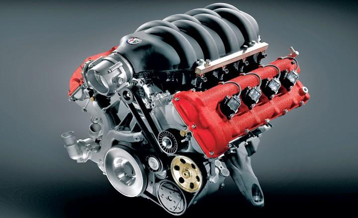
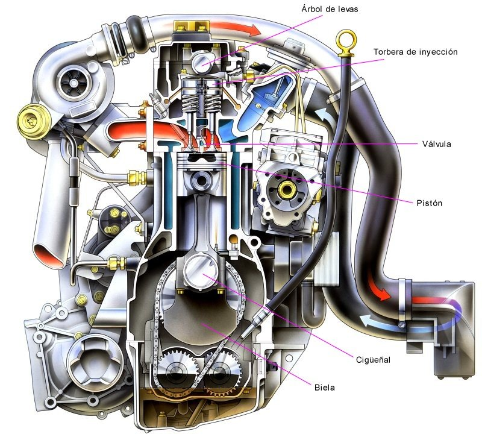
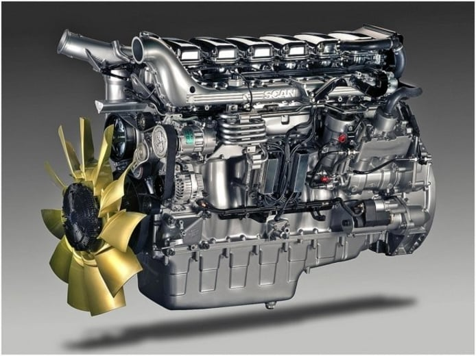
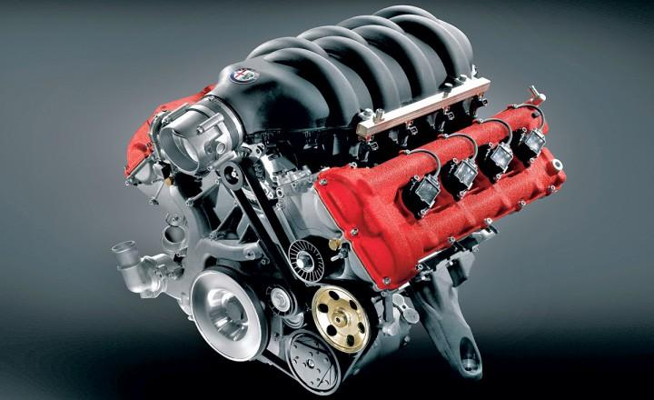
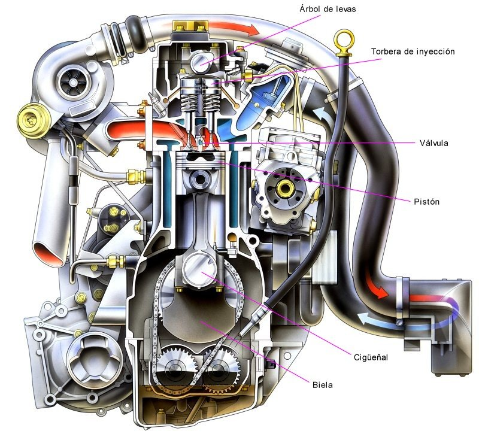
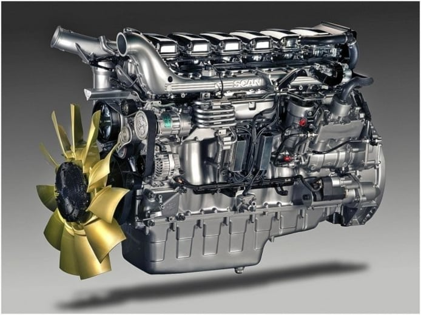
El tren delantero tiene una funcionalidad bastante fundamental en el desempeño y la conducción de cualquier coche. Por consiguiente, es importante conservar constante supervisión sobre este. Una vez que poseemos el volante en nuestras propias manos, este nos posibilita guiar el auto hacia donde nosotros mismos queremos. Empero, si alguna pieza llegara a fracasar, las ruedas tomarían una dirección distinto a la solicitada.
+ INFOSe puede deber por una pérdida de efectividad en las pastillas de freno gracias a un sobre calentamiento. Algunas veces llega un punto en el cual las pastillas dejan de rendir debidamente ocasionando un impacto que es conocido por los expertos como fading. En casos como éste debería dejarse enfriar los frenos del carro a lo largo de un momento.
+ INFO 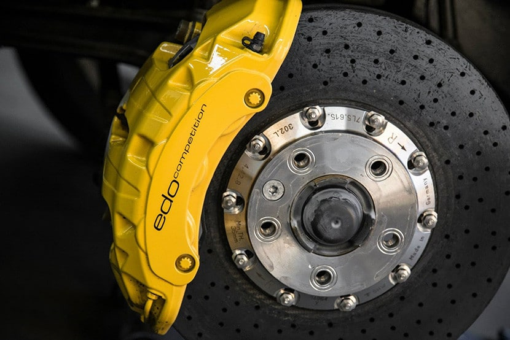
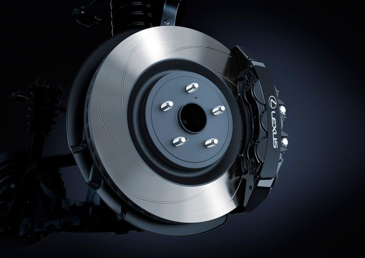
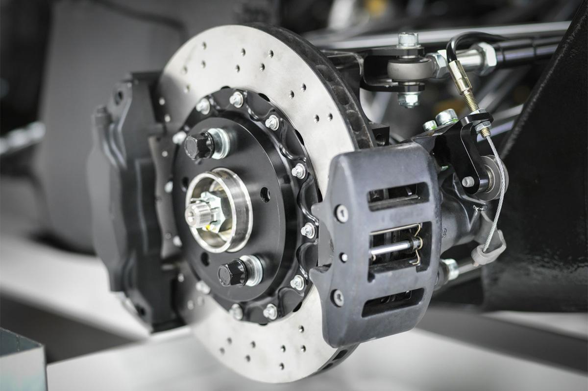
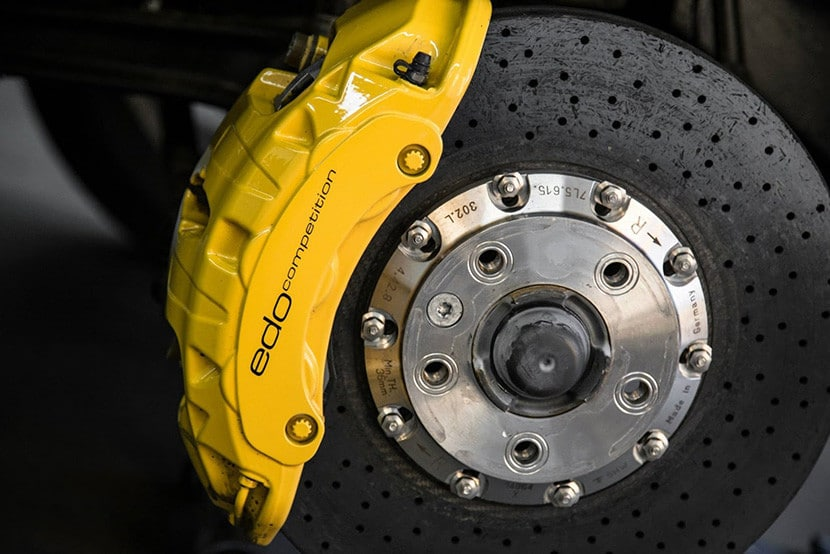
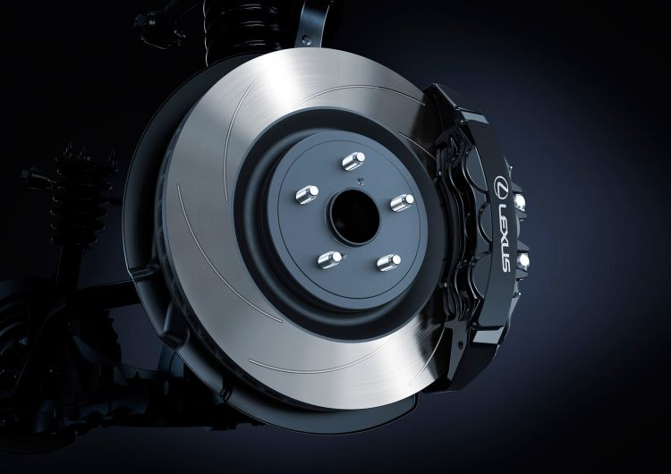
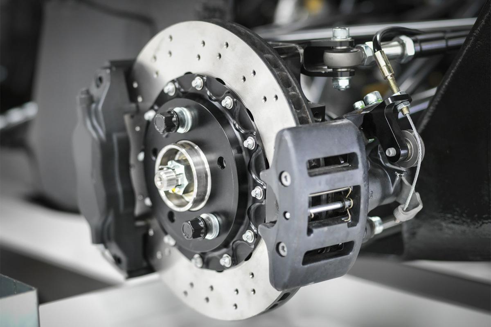
 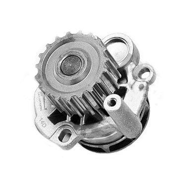
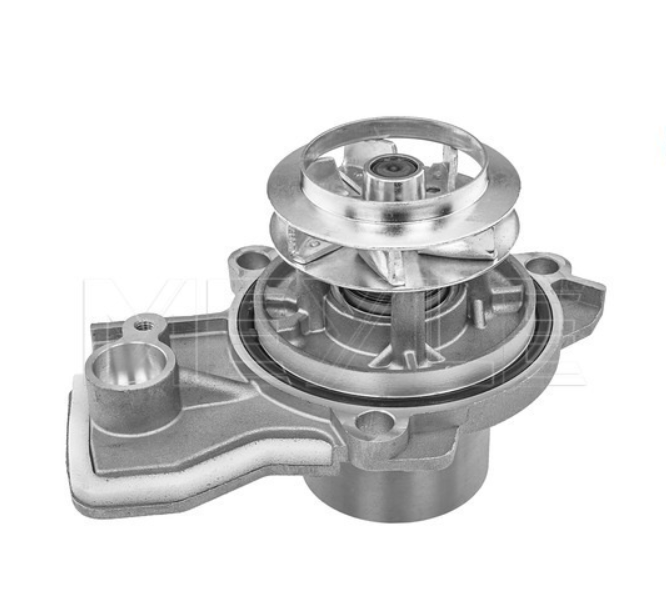
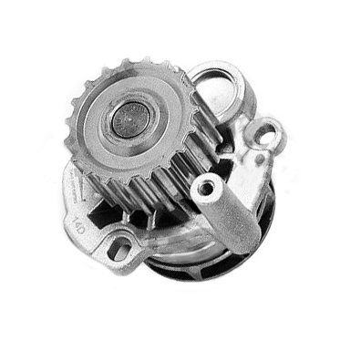
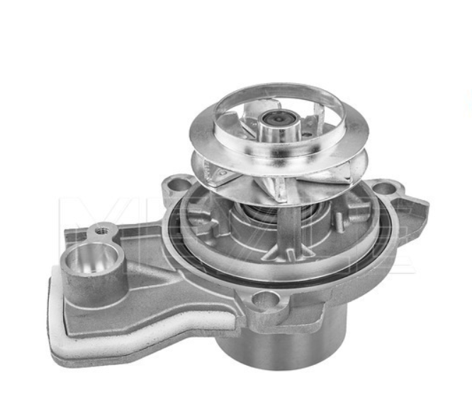
La junta que hay entre la carcasa de la Bomba de Agua y el bloque del motor previene que el refrigerante se salga del motor. Además previene que entre un exceso de viento en el sistema de refrigeración. Esta junta puede fracasar si no es instalada de manera correcta, si el transporte no funciona a lo largo de numerosas semanas seguidas o si el refrigerante se vuelve corrosivo. Aunque una junta que pierde refrigerante es algo malo, lo peor suele ser la ingreso de viento.
+ INFOSe puede deber por una pérdida de efectividad en las pastillas de freno gracias a un sobre calentamiento. Algunas veces llega un punto en el cual las pastillas dejan de rendir debidamente ocasionando un impacto que es conocido por los expertos como fading. En casos como éste debería dejarse enfriar los frenos del carro a lo largo de un momento.
+ INFO 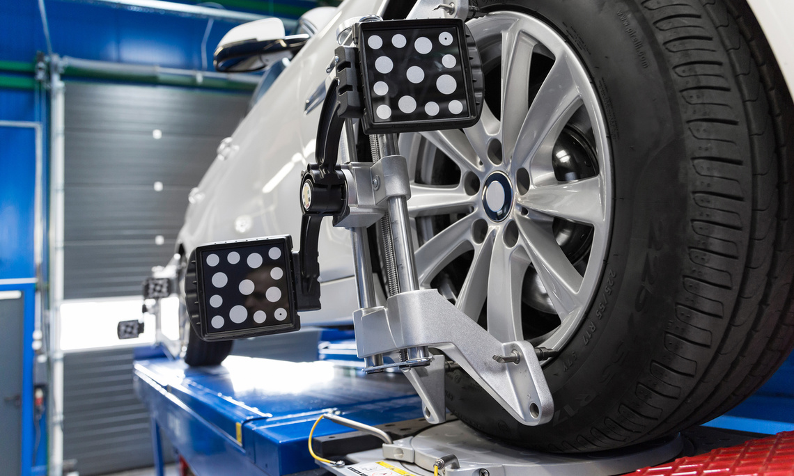
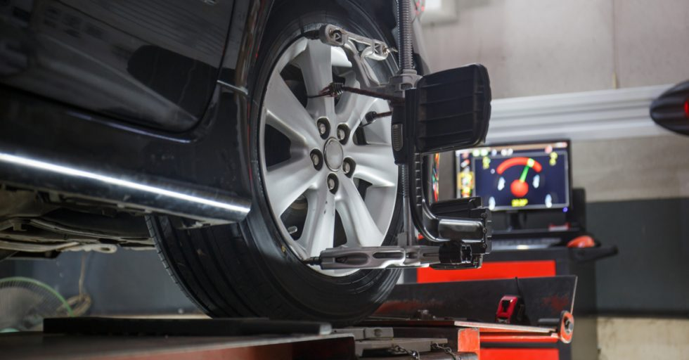
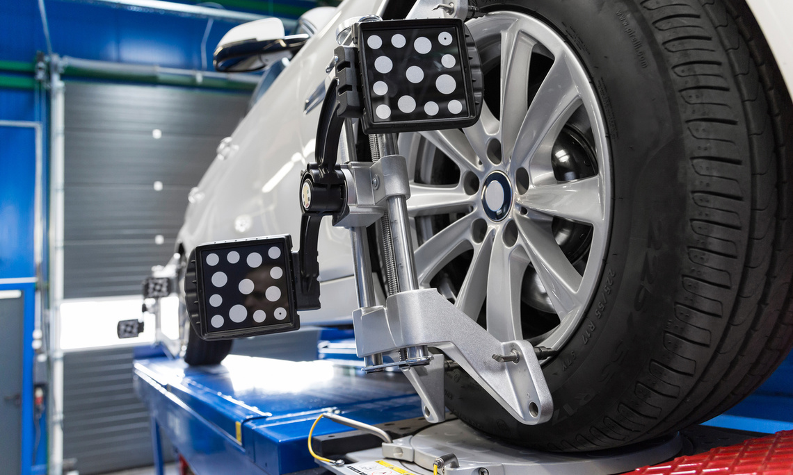
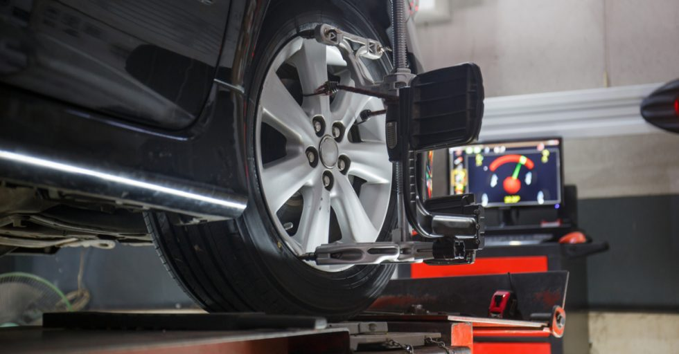